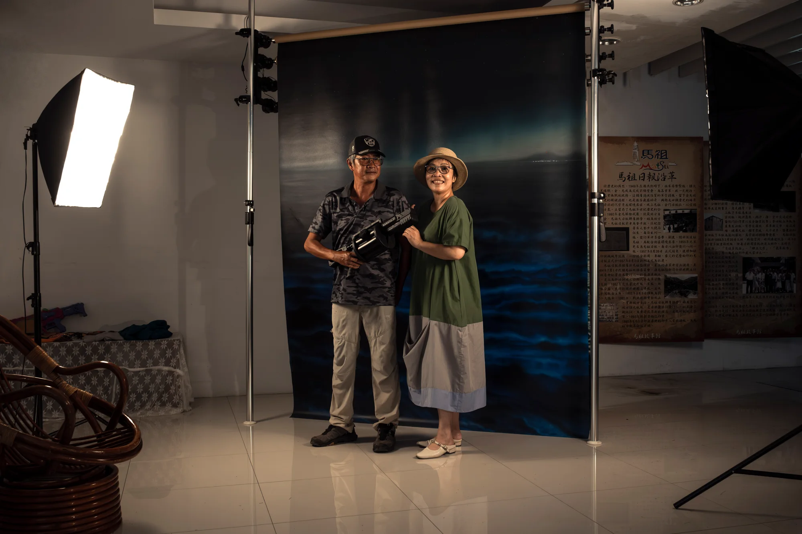
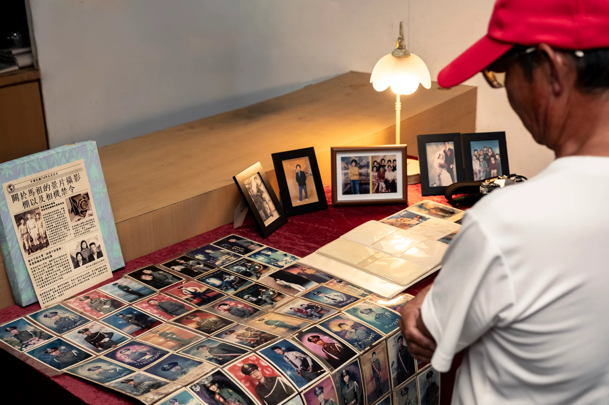
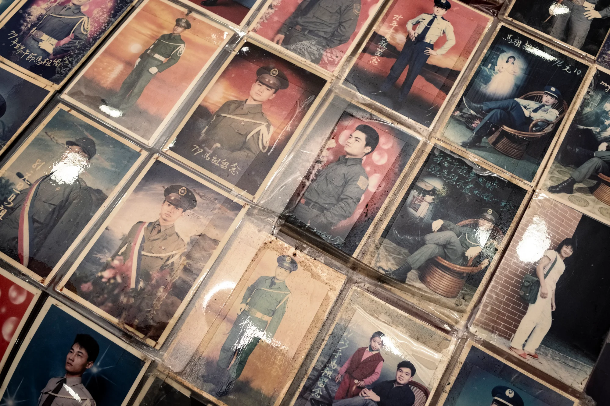
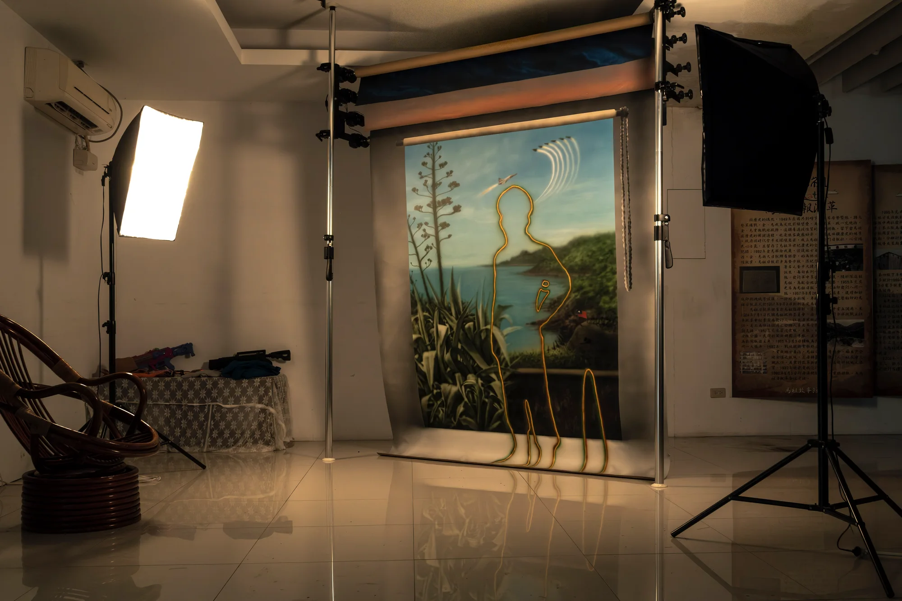
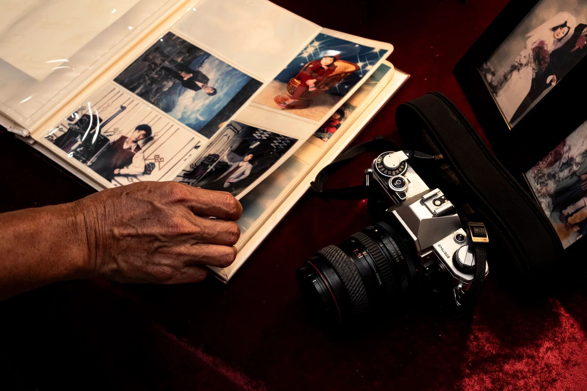
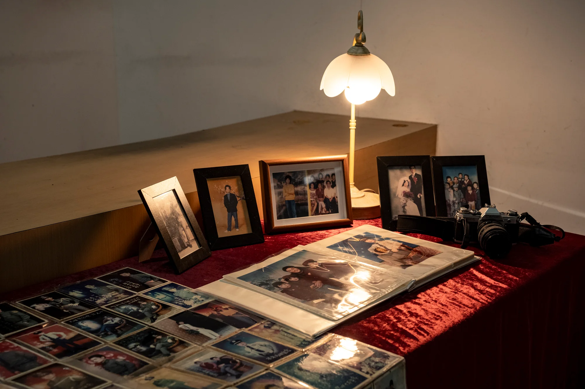
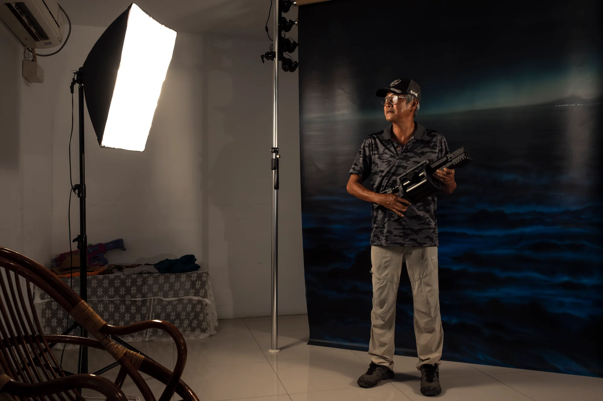

行吧行吧，依哥依爸
Go Go Brother, Go Go Father
2025

這件作品使用攝影棚景片的形式作為談論馬祖歷史記憶的切入點，兩岸關係緊張的時期，馬祖僅限持有證照的相館能進行攝影，於是整個世代馬祖人以及老兵的歲月痕跡都與相館攝影棚緊密連結。在與在地相館老闆的多次訪談及老照片的考察下，藝術家化身為當代的景片畫師，透過親手繪製的大尺幅背景幕，回應景片繪畫的時代意義流變，並邀請觀眾回到各種半真似假的奇幻景片前，再次隨著快門聲閃回歷史的斷面，重構當代的馬祖記憶與經驗。
作品名稱《行吧行吧，依哥依爸》取自愛國歌謠《哥哥爸爸真偉大》中的歌詞「走吧走吧，哥哥爸爸」，並以馬祖方言閩東語再次翻譯。使用這首只有國語版的兒歌作為名稱，除了反映家中男丁奔赴戰場的榮譽與苦澀，也透過這句話更開闊的延伸意義，象徵邀請家人一同離開或前往某處，也許是出門、出遊，或是出任務，卻也都連繫著家人的羈絆。另外，此次作品將同步連結回訪計畫，實質意義上的邀請馬祖居民與老兵回到馬祖，回到這組景片攝影棚內接受訪談，並請當年在馬祖開照相館的老闆來到現場為觀眾拍攝，回溯過往的榮耀經歷，並體驗這個時代的馬祖風情。」
Read in English
This work takes the form of photographic studio backdrops as an entry point into Matsu’s historical memory. During periods of heightened tension across the Taiwan Strait, photography in Matsu was restricted to licensed studios. The lives of an entire generation of Matsu residents and former soldiers thus became closely intertwined with the photographic studio. Drawing on repeated interviews with local studio owners and research into old photographs, the artist takes on the role of a contemporary backdrop painter. Through large hand-painted backdrops, he reflects on the changing meanings of this practice over time. Viewers are invited to return to fantastical scenes that hover between reality and fiction, flashing back to fragments of history with the click of the shutter and reconstructing contemporary memories and experiences of Matsu.
The title Go Go Brother, Go Go Father is drawn from the lyric “Go, go, brother and father” in the patriotic children’s song 《哥哥爸爸真偉大》 and rendered anew in the Matsu dialect of Eastern Min. Using a children’s song available only in Mandarin as its title evokes both the honor and bitterness of the men in a family departing for war. The phrase also carries a broader invitation for family members to leave or travel somewhere together, whether heading out, taking a trip, or going on a mission, while remaining connected by family bonds. The work will also be linked to a return-visit project, inviting Matsu residents and former soldiers back to Matsu and into this backdrop studio for interviews. Owners who ran photographic studios in Matsu at the time will be invited to photograph visitors on site, revisiting past experiences of honor while encountering Matsu as it is today.
現場與細節
VIEWS & DETAILS




